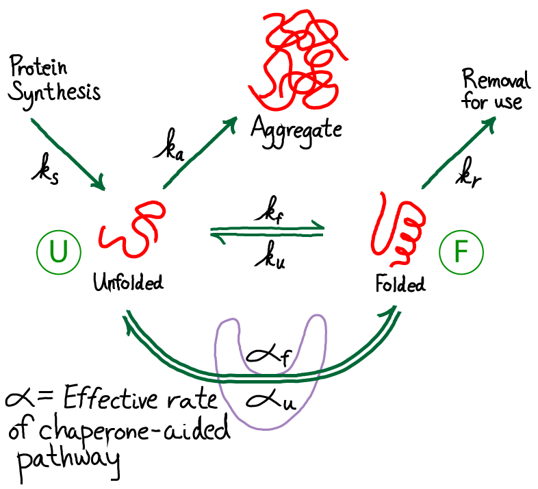

Our discussion, as usual, will focus on the essential biophysics rather than on more detailed models of specific systems. The simpler discussion enables understanding of the key driving forces and mechanisms, which in turn can provide building blocks for more sophisticated modeling.
From the figure above, you should see immediately that this is a driven system. Driving occurs because unfolded protein is being synthesized (at a rate $\ks$) and folded protein is removed (at a rate $\kr$) for trafficking to other parts of the cell where the proteins will be used. Unfolded proteins are also assumed to aggregate irreversibly at rate $\ka$. We are not concerned here with the source of energy for this driving, but it is critical to appreciate that free energy is being expended in the process. The spontaneous flow or driving indicates that indeed free energy is being expended. The system is not in equilibrium.
The need for chaperones implies that the rate of folding - at least for some proteins - is small compared to other rates, especially that for aggregaton. We will also assume that, once folded, proteins are reasonably stable so that the unfolding rate is even smaller than the folding rate. Hence, our picture is that $\ku < \kf$ and both are smaller than other rate constants in the model. This picture applies to the subset of proteins which are not fast folders.
Our goals are to determine the amount of protein which ends up aggegated compared to what is folded, and to understand how this ratio depends on the parameters of our simple model. Thus, we want to calculate the ratio \begin{equation} \frac{\mbox{Aggregation}}{\mbox{Folding}} = \frac{ \cu \, \ka }{ \cf \, \kr } , \label{aggratio} \end{equation} where the populations of the unfolded and folded states have been denoted by $\cu$ and $\cf$. This ratio of fluxes or overall rates (as opposed to rate constants alone) derives from basic mass action principles.
Given the input and removal of molecules from the system, it is natural to analyze the system in a steady state, which conveniently is the simplest analysis. (Note that subjecting a system to a steady-state analysis is not a claim that the system in question will always exhibit steady behavior. Rather, the steady state is a convenient and informative condition to examine.) We will therefore formulate our analysis in terms of steady-state concentrations: $\concss{X}$ for species X.
Our mathematical task is simplified by the observation that the ratio \eqref{aggratio} does not require the absolute values of the concentrations, but only their ratio. This ratio is determined using the continuity of flow from the unfolded to folded to the "removed" state (upper right in figure above). That is, the net flow from U to F must match the flow that is removed: \begin{equation} \concss{U} \, \kf - \concss{F} \, \ku = \concss{F} \, \kr , \end{equation} which in turn implies the ratio \begin{equation} \frac{ \concss{U} }{ \concss{F} } = \frac{ \ku + \kr }{ \kf } \label{unfratio} \end{equation}
We can now simply substitute \eqref{unfratio} into \eqref{aggratio} (which applies in steady or non-steady conditions) to obtain the aggregation ratio in steady state: \begin{equation} \mbox{Steady State: } \label{aggtriv} \frac{\mbox{Aggregation}}{\mbox{Folding}} = \frac{\ka}{\kr}\frac{\ku}{\kf} + \frac{\ka}{\kf} . \end{equation} The result depends only on rate constants and not on the absolute concentrations, which makes it straightforward to interpret.
To solidify our understanding of this almost-but-not-quite trivial model, we can rewrite \eqref{aggtriv} as $(\ka / \kf) \, [ (\ku / \kr) + 1]$. For proteins that are slow to fold spontaneously, we expect that the aggregation rate $\ka$ is much larger than the folding rate $\kf$; this is, after all, why chaperones are needed in the first place. Our re-write of the ratio shows that aggregation is indeed expected to be significant in our simple analysis without the presence of chaperones: even though the first term in the square brackets may be small due to slow unfolding (i.e., protein stability), it must be positive and hence the whole ratio must exceed $\ka / \kf$, which is large. In the limit that unfolding is much slower than removal ($\ku \ll \kr$), the ratio approaches $\ka / \kf \gg 1$ reflecting the fractional outflows from unfolded state. So we've done a little math to quantify our intuition that some kind of chaperone mechanism is needed when folding is slow, and equally importantly, set the stage for more realistic models.
It is worth noting that the ratio of unfolded protein in steady state given in \eqref{unfratio} generally will be far from the equilibrium value. The balance condition which must hold in equilibrium would dictate a ratio of $\ku / \kf$, which differs significantly from \eqref{unfratio} given our assumption that $\ku$ is small compared to other rates. Thus, perhaps ironically, the driving in this case shifts the populations toward the dangerous unfolded state, though this would appear to be intrinsic to the directionality of the system - proteins start out unfolded!
Although this model is more complicated than our previous one, it has the distinct advantage of actually including chaperones! Note that the chaperones are purely "passive" in the model as shown - they store no free energy and do not use ATP. The chaperones will act simply as catalysts. However, because we are considering a driven non-equilibrium condition, the chaperones' presence can alter the aggregation ratio.
To give away the punchline first, note that our new model adds to the prior model only by adding an additional pathway between the unfolded and folded state. Other processes are not altered. Hence, the net result of the model will be modified, "effective" rate constants that will replace $\kf$ and $\ku$ in our analyses above. All we need to do is set up the math to figure out what happens.
Before getting into detailed analysis of the model, we immediately see that it contains a cycle (U-F-FC-UC), and therefore the rates must satisfy a constraint, as holds for all cycles. In other words, among the eight rate constants in the cycle, only seven can be considered as adjustable parameters due to the cycle constraint \begin{equation} \label{constraint} \frac{ \kf \, \konf \, \kuc \, \koffu }{ \ku \, \kofff \, \kfc \, \konu } = 1 . \end{equation}
To extract biophysical information for this model, we will solve for its steady state. The algebra is somewhat complicated, although straightforward, and we just sketch it here. (Derivations of some results are given as exercises, with hints.) Fortunately, the basic idea is simple. We use the fact that the net flow through the chaperone pathway will be constant in a steady state - i.e., the flow from stat U to UC will match that from UC to FC and from FC to F. Our standard mass action machinery enables us to write down the corresponding equations easily:
\begin{align} \label{contone} \conc{U} \conc{C} \, \konu - \conc{UC} \, \koffu = & \, \conc{UC} \, \kfc - \conc{FC} \, \kuc \\ \conc{UC} \, \kfc - \conc{FC} \, \kuc = & \, \conc{FC} \, \kofff - \conc{F} \conc{C} \, \konf , \label{conttwo} \end{align} where we have omitted the "SS" (steady state) superscripts to keep the equations cleaner.Using a strategy described in the Exercises, we can solve these equations for the effective rate constants, $\aow$ and $\awo$, along the chaperone path.

These are \begin{align} \label{af} \aow & = \frac{ \kor \, \krf \, \kfw }{ \denom } \\ \awo & = \frac{ \kwf \, \kfr \, \kro }{ \denom } \label{au} \end{align}The graphic above demonstrates that the presence of chaperones in the model, which initially appeared a great complication, can be included as a parallel pathway with the effective first-order rate constants $\aow$ and $\awo$. That is, the probability of folding (transitioning from state U to F) per unit time is $\conc{U} \, ( \kf + \aow )$ and for unfolding is $\conc{F} ( \ku + \awo )$. To put it another way, the overall rate constants, accounting for both paths between U and F, are:
\begin{align} \label{kftot} \kftot & = \kf + \aow \\ \kutot & = \ku + \awo \label{kutot} \end{align}Let's examine the aggregation ratio term by term. We'll focus first on the factor $\kutot / \kftot$ and compare it to the trivial case given in \eqref{aggtriv}. In fact, this factor is unchanged, as we can see by examining the ratio \begin{equation} \frac{ \awo }{ \aow } = \frac{ \konf \, \kuc \, \koffu }{ \konu \, \kfc \, \kofff } = \frac{ \ku }{ \kf } , \end{equation} where the last equality derives from the cycle constraint \eqref{constraint}. This ratio of effective rates does not change, and hence the first term in \eqref{aggsimp} is the same as the corresponding term in the chaperone-free case, \eqref{aggtriv}.
The second term in \eqref{aggsimp} clearly can differ from the chaperone-free case. In the limit of large chaperone concentration $\conc{C}$, the term can become very small (within our mass-action picture; in reality, there is a strict limit to the concentration of a large protein or complex). So the second term can get small, but the first term remains as it was in the absence of chaperones.
The bottom line is that the presence of chaperones can indeed decrease the aggregation ratio, hence increasing folding, down to a limit. Namely, in our mass-action picture, \begin{equation} \mbox{Passive Chaperones: } \frac{\mbox{Aggregation}}{\mbox{Folding}} > \frac{\ka}{\kr}\frac{\ku}{\kf} , \label{aggsimplim} \end{equation} where the "tot" superscripts are omitted because $\kutot / \kftot = \ku / \kf$ in the case of passive chaperones. We can see that for proteins with a strong tendency to aggregate (large $\ka$) and/or modest stability ($\ku$ significant compared to $\kf$), significant aggregation could still occur.
The only way to improve on \eqref{aggsimplim} within our current chaperone cycle is to somehow drive the chaperone function.
ATP-driven chaperones can achieve a higher level of successful folding compared to the passive case. Such chaperones convert the free energy stored in the cell's non-equilibrium concentration of ATP (relative to ADP) into greater folding "fidelity" - i.e., more folding, less aggregation. This exchange bears qualitative similarities to the cell's exchange of free energy for greater fidelity in translation.
The basic mechanism for the increased folding with ATP driving is easy to see within our simple kinetic modeling. As we showed in the previous section, without driving, the ratio $\kutot / \kftot$ that appears in \eqref{aggsimp} cannot change. This is because, in essence, the passive chaperone acts simply as a catalyst. The ATP-driven chaperone, by contrast, can modify the ratio. The distinction between the two underscores the differences in cycle structure, as discussed in the cycle logic section: the distinguishability between ATP- and ADP-bound chaperones provides a "handle" to drive the cycle in one direction, whereas passive chaperones (no ATP or ADP) act to drive the cylce in both directions equally.
The effect of ATP-driving can be seen in the effective rate constants, $\alpha$ given in \eqref{af} and \eqref{au}. Instead of $\conc{C}$ in $\aow$, we will have $\conc{C \cdot ATP}$ and in $\awo$ we will have $\conc{C \cdot ADP}$. In turn, these will modify $\kftot$ and $\kutot$ in \eqref{kftot} and \eqref{kutot}, and lead to a significantly modified aggregation ratio \eqref{aggsimp}. In particular, the first term in \eqref{aggsimp} can be decreased well below the passive-case minimum given in \eqref{aggsimplim} - and we expect signficantly more folding.
To see this more explicitly, we can revisit the first term in \eqref{aggsimp}. Recall that the solution folding and unfolding rates, $\ku$ and $\kf$ are presumed small compare to other rates (necesitating chaperone use in the first place). Hence we have \begin{equation} \frac{\kutot}{\kftot} = \frac{ \ku + \awo }{ \kf + \aow } \simeq \frac{ \awo }{ \aow } = \frac{ \ku \, \conc{C \cdot ADP} }{ \kf \, \conc{C \cdot ATP} } , \label{fracatp} \end{equation} where we used the constraint \eqref{constraint}. The fraction \eqref{fracatp} can be much less than $\ku / \kf$ because we expect that any protein evolved to use ATP will bind much more strongly to ATP than to ADP. That is, we expect $\conc{C \cdot ATP} \gg \conc{C \cdot ADP}$. Recall from the section on ATP that the concentrations of the two nucleotides are about the same.
We have not touched on quite interesting questions regarding details of how free energy from ATP is used - e.g., whether chaperones perform mecahanical work to aid folding or simply prevent aggregation (see work by Lorimer and by Horwich). Our simple analysis suggests that such mechanistic details may be less important than general process of transducing free energy for the end result of more folded protein.
Arguably, the driven process of chaperone-aided folding echoes the driven or "kinetic" proofreading which occurs in protein translation.